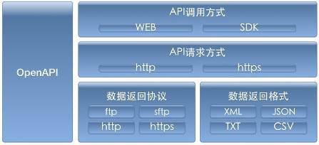

国产化支持
适配完成国产服务器：海光、鲲鹏、飞腾、申威、龙芯等处理器；
适配完成国产操作系统：国产操作系统（麒麟、统信等），（提交第三方报告）。
国产性能在4台飞腾2500CPU配置下，能够达到以下性能指标：
100亿条结构化数据记录规模、100并发条件下，单条件精确查询检索时间不大于1秒，分页查询检索时间不大于3秒；
用户和资源管理
提供用户访问权限认证，完善的用户密码管理机制，提供数据加密算法，支持存储过程加密；
支持不同租户之间资源隔离，包括计算资源和物理资源上完全隔离，SQL查询根据绑定用户到不同的资源组上执行，从而满足实例内部多租户、混合负载的需求。
支持多租户隔离，避免相互影响，可控制不同实例所能使用的系统资源，包括CPU、内存、虚拟资源等。
扩展性及可靠性 集群的可扩展性
支持Oracle的DBMS管理包函数
兼容PostgreSQL语句语法、函数、类型等，支持对现有系统的数据库无缝迁移切换；
支持机要密码适配；
支持包、包体功能；
支持表的触发器功能；
支持DBLink；
支持数据闪回功能，支持故障自动恢复；
支持数据灾难恢复 RPO=0
，RTO不大于30秒；
支持不停库的情况下弹性添加节点或减少节点，自动选择空闲节点创建分片；
分布式集群提供服务级别的分布式冗余策略，确保数据存放多副本和数据的强一致性，保证数据的高可靠。
支持按需平滑扩容，整体性能随节点数量的扩展而线性增长，且扩容过程不影响在线业务查询和写入。
支持集群扩缩容期间数据重分布功能，且不影响业务的正常使用。
集群导入速率不低于0.5GB/秒；导出不低于1.2GB/秒；
数据的可靠性
提供备份恢复功能，支持全量和增量备份，支持指定备份快照恢复数据。
数据库系统应保证7×24小时不间断运行，数据可靠性不低于99.999%。
高可用性
采用分布式计算框架提供数据在线分析服务，可按需动态扩容和缩容，扩缩容过程不影响业务正常使用。
集群的高可用
支持结构化、半结构化、非结构化、空间地理等数据在一个库里同时存储；
支持访问Oracle、Mysql、HBase、Hive、spark-sql、redis等数据库；
系统各组件冗余设计,节点故障后持续运行且无单点失败风险。
协调节点或管理节点基于全对称分布式的多节点集群架构，且支持弹性扩展，任意物理机损坏，业务无感知运行并自动恢复。
计算节点支持active-active多节点形态，任意一台计算节点损坏，不影响集群的整体可用性，保证计算节点是无状态化的，且计算节点支持弹性扩容，扩容过程中业务继续可用。
数据节点支持多副本，任意一个数据节点会有其他副本提供对等的服务，单台数据节点损坏，不影响集群的整体可用性，且数据节点支持弹性扩容，扩容过程中业务继续可用。
数据的高可用
支持数据多副本，每个副本提供对等的服务，提高查询性能及高可用性。
支持行列混合，行存表和列存表能够在一条SQL中同时参与运算，提供多种压缩算法和压缩级别，支持智能索引；
系统运维的高可用
支持包、包体功能；
支持表的触发器功能；
支持DBLink；
支持数据闪回功能，支持故障自动恢复；
支持数据灾难恢复 RPO=0
，RTO不大于30秒；
支持不停库的情况下弹性添加节点或减少节点，自动选择空闲节点创建分片；
支持数据库在线版本热升级，升级过程中不影响业务使用。
支持服务状态实时监控，故障节点副本自动无缝切换，同时针对故障节点支持自动迁移、自动拉起等恢复动作。
运维管理 安装部署
系统提供图形化的安装部署能力，安装部署过程对运维人员友好，异常情况可干预和分析。
扩容、缩容
系统提供图形化的扩容、缩容等运维管理界面，扩容、缩容过程中的进度可跟踪和监控，支持在线平滑扩缩容。
同时支持对集群的计算节点、存储节点进行扩容和缩容，扩容、缩容过程平滑，系统稳定。集群的整体性能随节点数的增加而线性增长。
备份与恢复
系统提供图形化的备份策略，灵活的配置全量备份和增量备份策略；提供图形化的数据恢复操作功能。
数据库删除
系统当不需要某个数据库时，可以对数据库进行删除操作，且提供图形化的操作界面。
数据库对象的维护功能
针对数据库内对象的维护提供标准的SQL语句接口或者图形界面。比如数据库的创建、删除；用户的创建、权限维护；表的创建、删除、表名的修改、列名的修改等。
监控能力
提供细粒度的监控能力，包括集群的存活状态、CPU的使用情况、内存的使用情况、存储空间的使用水位、查询的QPS监控、写入的TPS监控、查询和写入的响应时间监控，慢查询的监控、读写失败率的监控等指标。
支持分析数据库的连接信息、会话信息、封锁信息、执行SQL的查询、慢SQL的查杀。
告警能力
提供细粒度的配置告警的能力，比如cpu的使用率超过使用阈值、存储空间超过安全水位、读写的响应时间超过用户配置的时间，读写失败率超过一定阈值等，均可以配置相关的告警，且告警渠道具备多种方式，例如：短信、邮件、电话等任意一种。
数据库集群扩展能力
单集群由多台物理服务器组成：单集群服务器台数至少支持 350
台以上；
支持多实例部署，单集群内支持 350
及以上实例部署；
单数据库实例支持海量业务表，单数据库实例可扩展至支持15000
张业务表；
单数据库实例支持海量数据存储：单集群单实例至少支撑PB数据。
开放API
我方产品提供开放API：产品部署/卸载、日志、监控、告警、运维、实例管理接口，并提供开放API接口功能说明、使用说明。

API调用方式:平台提供直接Web调用与SDK调用两种API调用方式，对于一些高敏感等级的数据，利用SDK进行加密封装后，供租户进行调用。SDK支持常用的编程语言，如JAVA、C++、PYTHON等。
API请求方式:提供基于tp/tps协议的RESTAPI做为数据请求方式。每次请求均需通过平台统一进行认证鉴权与日志记录。
数据返回协议:对于小数据量的数据，直接在tp/tps响应体中返回数据。较大的数据以ftp、sftp的方式提供数据，对于即时性要求比较高的大数据量数据，通过异步tp/tps请求进行消息交互，ftp或sftp进行实际数据传输。对外提供的数据，平台统一进行数据安全性监控。
数据返回格式:数据返回的具体格式可以XML、JSON、TXT、CSV格式提供，以方便第三方租户根据需求选择相应格式直接使用或进行二次开发。针对某些需求，可以对所提供的数据进行加密和压缩服务。